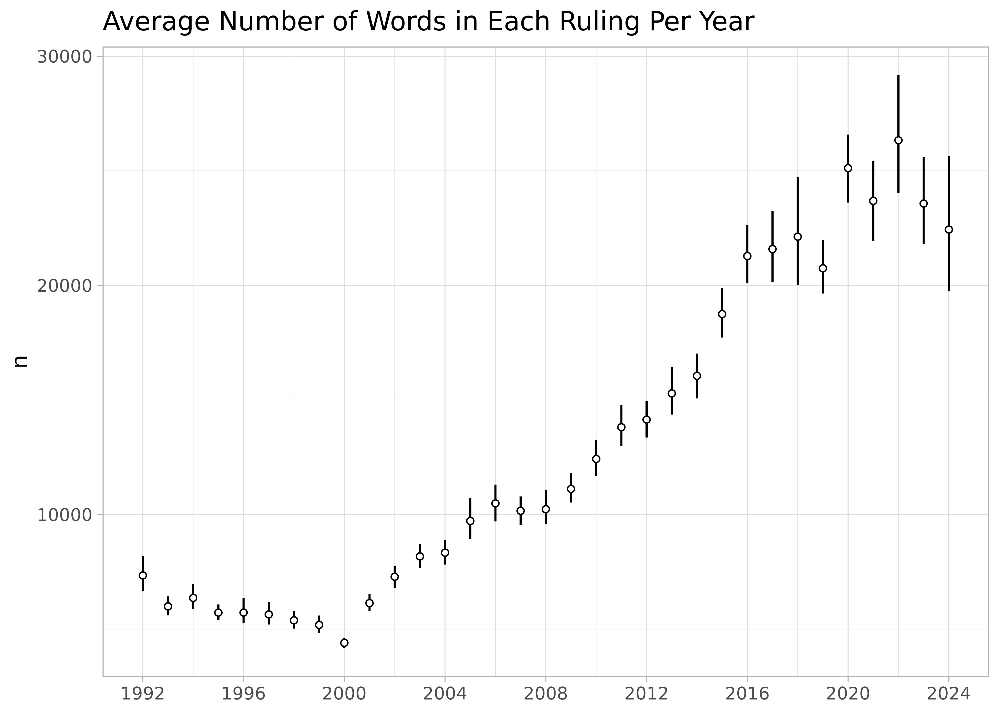

Data
Note. All datasets described here were created using these scripts, which use the functions described in the search and download article.
32 Years
ccc collects a corpus of over 28,228 rulings made by the Colombian Constitutional Court (CCC) which cover the period of 32 years immediately after the first ruling was published on April 3, 1992. All together, they form a complex citation network with approximately 693,053 ties among them.
Each ruling has a standardized name (e.g., C-776-03, T-025-04, SU-1184-01). The prefix refers to the type of ruling; the infix carries no meaning; and the suffix indicates the year in which the ruling was made.
There are three types of ruling:
Crefers to the cases in which the CCC decides whether a law, rule, administrative decision is compatible with constitutional norms—also known as judicial review.-
Trefers to tutela, which is an individual complaint mechanism (or special writ) aimed at the protection of fundamental rights. These tutelas give ordinary citizens the power to go before any ordinary judge and request the protection of their “fundamental constitutional rights” whenever they perceive them be threatened. Each year, the CCC selects approximately 2% of these cases for review, and the final decision may uphold or reverse decisions made by lower courts.A lot of these cases are related to healthcare access and pensions.
SUrefers to decisions in which the Court has decided to compile severalTcases. They are a sort of legally binding “Annual Reviews” for the judicial system in Colombia.
Citations
metadata contains information on each ruling.
metadata
#> # A tibble: 28,228 × 12
#> id type year date indegree outdegree word_count descriptors mp
#> <chr> <fct> <int> <date> <int> <int> <int> <list> <lis>
#> 1 T-001-… T 1992 1992-04-03 188 0 7060 <chr [14]> <chr>
#> 2 C-004-… C 1992 1992-05-07 119 0 20107 <chr [11]> <chr>
#> 3 T-002-… T 1992 1992-05-08 285 0 7597 <chr [4]> <chr>
#> 4 T-003-… T 1992 1992-05-11 146 0 5760 <chr [8]> <chr>
#> 5 C-005-… C 1992 1992-05-11 7 1 6869 <chr [11]> <chr>
#> 6 T-006-… T 1992 1992-05-12 228 0 32408 <chr [21]> <chr>
#> # ℹ 28,222 more rows
#> # ℹ 3 more variables: date_public <date>, file <chr>, url <chr>citations contains the citation network in “edge list” format. Each citation has a weight that refers to the number of times a ruling cites a previous case.
citations
#> # A tibble: 693,053 × 5
#> from to weight from_date to_date
#> <fct> <fct> <int> <date> <date>
#> 1 C-001-18 C-004-93 1 2018-01-24 1993-01-14
#> 2 C-001-18 C-007-01 1 2018-01-24 2001-01-17
#> 3 C-001-18 C-008-17 2 2018-01-24 2017-01-18
#> 4 C-001-18 C-030-03 1 2018-01-24 2003-01-28
#> 5 C-001-18 C-037-96 3 2018-01-24 1996-02-05
#> 6 C-001-18 C-041-93 1 2018-01-24 1993-02-11
#> # ℹ 693,047 more rowsThere is also a convenient function that turns these two datasets into a squared adjacency matrix.
M <- create_citation_adj_mat()
dim(M)
#> [1] 28228 28228The resulting matrix is very sparse. It has 796,819,984 cells and only 0.087% are non-zero.
The following figure is my best attempt at visualizing the whole thing:

Note. If we were to observe an empty column, it would mean that none of the rulings created during that particular time period where cited in future rulings (i.e., rulings that failed to become precedent). If we were to observe an empty row, it would mean that none of the rulings created during that particular time period cited previous rulings. Both of these scenarios are entirely hypothetical.
Time Traveling
A citation network is always directed, asymmetric, and acyclic—i.e., it points backwards in time.
Let’s assume that is lower triangular, meaning that all elements above the main diagonal are zero. This happens when the documents are arranged from first to last, the rows represent source documents, and the columns represent target documents. The main diagonal is also zero because we won’t allow any document to cite itself.
Note. The direction of the citation can be considered backwards in time (i.e., documents citing past documents) or forwards in time (i.e., knowledge flowing from documents to future documents). Here I use a backward-looking convention. In acyclic temporal graphs of this sort, the in-degree of the earliest node is always zero and the out-degree of the newest node is also always zero.
However, the CCC matrix is not lower triangular. Some documents cite each other in a way that creates the illusion of time travel because the court has been writing them simultaneously. In some (very few) cases a ruling will cite another one that will be published a couple months later.
Other rulings have been modified many years later for privacy concerns—e.g., T-1003-99. In such cases the CCC has modified the original to text to ensure that the names of the parties involved are rendered anonymous.
These sorts of modifications are usually prefaced by a small editorial note at the beginning of the document.
url <- "https://www.corteconstitucional.gov.co/relatoria/1999/T-1003-99.htm"
txt <- ccc_txt(url)
#> https://www.corteconstitucional.gov.co/relatoria/1999/T-1003-99.htm
txt |>
stringr::str_trunc(width = 300) |>
stringr::str_squish() |>
stringr::str_wrap() |>
cat()
#> NOTA DE RELATORIA: Mediante auto 397 de fecha 19 de julio de 2019, el cual se
#> anexa en la parte final de esta providencia, se ordena suprimir el nombre y los
#> datos que permitan identificar al accionante y, en su lugar, sustituirlos por el
#> nombre ficticio de “Miguel”. Sentencia T-1...This document is also accompanied by a small text—labeled Auto 397/19—which contains citations to future rulings that deal with the issue of anonymity in public documents. There are more examples of this kind of time travel in the CCC dataset.
Thus, the upper triangular section of the matrix for the Colombian Constitutional Court has various non-zero entries.
Text Features
See Denny and Spirling (2018) for an in-depth discussion of various pre-processing steps (e.g., removal of stop words, lemmatization, lowercasing).
The docterms dataset contains a data frame with document identifiers (doc_id) and word counts (lemma and n). It has 26,945,876 rows.
docterms
#> # A tibble: 26,945,876 × 3
#> doc_id lemma n
#> <fct> <fct> <int>
#> 1 C-001-18 abierto 2
#> 2 C-001-18 abordar 1
#> 3 C-001-18 absoluto 1
#> 4 C-001-18 abstracto 12
#> 5 C-001-18 academia 3
#> 6 C-001-18 academico 1
#> # ℹ 26,945,870 more rowsThis dataset contains 28,228 unique documents with a vocabulary size of 10,954.
The create_dtm() function creates a sparse document-term matrix from the information contained in docterms.
A <- create_dtm()
dim(A)
#> [1] 28228 10954Close to 91% of the cells in this matrix are empty, which is why we call it a “sparse matrix.”
mean(A == 0L)
#> [1] 0.9128556Here is a random subset of :
set.seed(1111)
i <- sample(1:nrow(A), 10)
j <- sample(1:ncol(A), 5)
A[i, j]
#> 10 x 5 sparse Matrix of class "dgCMatrix"
#> abusivo rebajar pensionada transportador vulnerarir
#> T-896-07 . . . . .
#> T-863A-99 . . . . .
#> T-052-20 . . . . .
#> T-270-16 . . . . .
#> T-726-98 . . . . .
#> SU-415-15 . . . . .
#> C-263-13 3 . . . .
#> T-062-11 . . . . .
#> C-014-97 . . . . .
#> T-300-19 . . . . .Note. I am still unsatisfied with the Spanish lemmatization provided by spaCy, so this will probably change in the future if I figure out a better way.
Centrality
This section relies on some external packages.
Citations Across Time
The following Figure shows average in-degree (citations) and out-degree (references) made in each ruling across the years. Note that, on average, the decisions written during 1992 tend to be significantly more cited that the ones written in other years, giving them some sort of “first-movers advantage” over the others—i.e., the most innovative thing of any kind is the first of its kind.
Code
metadata |>
pivot_longer(c(indegree, outdegree), names_to = "dtype", values_to = "degree") |>
mutate(dtype = case_when(
dtype == "indegree" ~ "Average Inward Citations (in-degree)",
dtype == "outdegree" ~ "Average Outward Citations (out-degree)"
)) |>
ggplot(aes(year, degree)) +
stat_summary(
fun.data = \(x) mean_cl_boot(x, conf.int = 0.95), size = 1/3,
shape = 21, fill = "white", stroke = 1/2
) +
facet_grid(~dtype, scales = "free_y") +
scale_x_continuous(labels = seq(1992, 2024, 4), breaks = seq(1992, 2024, 4)) +
labs(y = NULL, x = NULL) +
theme(strip.text.y = element_text(angle = 0))
Fowler and Jeon (2008) interpret the panel on the right as evidence that the legal norm of stare decisis is becoming stronger, but that’s definitely wishful thinking. Leskovec, Kleinberg, and Faloutsos (2007) show that that out-degree tends to grow over time in many different kinds of networks.
The following Figure disaggregates both kinds of citation by type of ruling.
Code
metadata |>
pivot_longer(c(indegree, outdegree), names_to = "dtype", values_to = "degree") |>
mutate(dtype = case_when(
dtype == "indegree" ~ "Average Inward Citations (in-degree)",
dtype == "outdegree" ~ "Average Outward Citations (out-degree)"
)) |>
ggplot(aes(year, degree)) +
stat_summary(
fun.data = \(x) mean_cl_boot(x, conf.int = 0.68), fatten = 1/2,
shape = 21, fill = "white", size = 1/10
) +
facet_grid(type ~ dtype) +
scale_x_continuous(labels = seq(1992, 2024, 4), breaks = seq(1992, 2024, 4)) +
labs(y = NULL, x = NULL) +
theme(strip.text.y = element_text(angle = 0))
Hubs and Authorities
Instead focusing on in-degree or out-degree, we can follow Fowler and Jeon (2008) in calculating more sophisticated measures of centrality.
The key insight is that we can transform the original (unweighted) citation matrix in two different ways:
-
A co-citation matrix in which any two rulings are connected by the total number of other rulings that cite both. The
cocitation()function inigraphmakes the following calculation: -
A bibliographic coupling, in which any two rulings are connected by the number of common references. The
bibcoupling()function inigraphmakes the following calculation:
Here, the diagonal elements of correspond to the in-degree for each ruling (or the row sums of ); whereas the diagonal elements of correspond to the out-degree for each ruling (or the column sums of ).
Following Kleinberg (1999), Fowler and Jeon (2008) calculate authority and score hubs for each ruling. These are the first eigenvectors of and respectively. Ronald Breiger once noted that “several stories might be, and are, told about eigenvectors. They are the low-dimensional scaffolds that support higher-dimensional structures.” In social networks, eigenvectors are interpreted as a measure of “centrality” which roughly translates to the extent to which a node well-connected to other well-connected nodes.
In this case, the story is supposed to go something like this:
The authority score of a case depends on the number of times it is cited and the quality of the cases that cite it. Symmetrically, the hub score of a case depends on the number of cases it cites and the quality of the cases cited. Thus, authority scores indicate the degree to which a case is thought to be important for resolving other important issues that come before the Court, while hub scores indicate the degree to which a case is well-grounded in previous important rulings.
Fowler and Jeon (2008, 17)
Calculating these scores is pretty straightforward using the igraph package:
Code
net <- igraph::graph_from_data_frame(
## we will use the unweighted edge list
d = citations |> select(!weight),
directed = TRUE,
vertices = metadata |> select(id, type, date, year, indegree, outdegree)
)
V(net)$authority <- igraph::authority_score(net, scale = FALSE)$vector
#> Warning: `authority_score()` was deprecated in igraph 2.1.0.
#> ℹ Please use `hits_scores()` instead.
V(net)$hub <- igraph::hub_score(net, scale = FALSE)$vector
#> Warning: `hub_score()` was deprecated in igraph 2.0.3.
#> ℹ Please use `hits_scores()` instead.Measurements of authority are correlated with in-degree measurements, but they’re not the same thing.
Code
igraph::as_data_frame(net, what = "vertices") |>
mutate(top = ifelse(rank(-authority) %in% 1:15, name, "")) |>
ggplot(aes(indegree, authority, color = type)) +
geom_point(alpha = 1/5) +
ggrepel::geom_text_repel(aes(label = top), size = 2.5, family = "Avenir", max.overlaps = 50) +
scale_x_log10()
#> Warning in scale_x_log10(): log-10 transformation introduced infinite values.
#> log-10 transformation introduced infinite values.
Note. Given the large number of T cases, it makes sense that the most “central” C rulings define what a tutela is (C-543-92) and further clarify the circumstances under which a tutela can be presented against decisions made by lower courts (C-590-05).
The same goes for “hub” and “out-degree” measurements.
Code
igraph::as_data_frame(net, what = "vertices") |>
mutate(top = if_else(rank(-hub) %in% 1:15, name, NA_character_)) |>
ggplot(aes(outdegree, hub, color = type)) +
geom_point(alpha = 1/5) +
ggrepel::geom_text_repel(aes(label = top), size = 2.5, family = "Avenir", max.overlaps = 50) +
scale_x_log10()
#> Warning in scale_x_log10(): log-10 transformation introduced infinite values.
#> log-10 transformation introduced infinite values.
#> Warning: Removed 28213 rows containing missing values or values outside the scale range
#> (`geom_text_repel()`).
Note. It makes sense that SU rulings are heavily represented as “hubs.”
Finally, note that authority and hub scores are somewhat related to each other; however, by definition, the very first rulings can never be hubs and the very last rulings can never be authorities. Hence we see three clusters.
Code
igraph::as_data_frame(net, what = "vertices") |>
ggplot(aes(authority, hub, color = date)) +
geom_point(alpha = 1/5, size = 1/3) +
scale_x_log10() + scale_y_log10() + scale_color_viridis_c(trans = "date")
#> Warning in scale_x_log10(): log-10 transformation introduced infinite values.
#> Warning in scale_y_log10(): log-10 transformation introduced infinite values.
Length of Documents
Along with the increase in citations over time, an important feature of how the CCC rulings have evolved over time concerns the length of each document.
There is a variable called word_count in the metadata dataset which allows us to see changes over time.
Code
metadata |>
ggplot(aes(year, word_count)) +
stat_summary(
fun.data = \(x) mean_cl_boot(x, conf.int = 0.95), size = 1/3,
shape = 21, fill = "white", stroke = 1/2
) +
scale_x_continuous(labels = seq(1992, 2024, 4), breaks = seq(1992, 2024, 4)) +
labs(y = "n", x = NULL, title = "Average Number of Words in Each Ruling Per Year") 
Other Cases
Gender
gender_cases contains cases related to gender equality across a variety of topics, collected by domain experts here.
gender_cases
#> # A tibble: 471 × 4
#> id type tema href
#> <chr> <fct> <fct> <chr>
#> 1 T-064-23 T A LA IGUALDAD Y LA NO DISCRIMINACIÓN /relatoria/2023/T-064-23.…
#> 2 T-028-23 T A LA IGUALDAD Y LA NO DISCRIMINACIÓN /relatoria/2023/T-028-23.…
#> 3 T-452-22 T A LA IGUALDAD Y LA NO DISCRIMINACIÓN /relatoria/2022/T-452-22.…
#> 4 T-425-22 T A LA IGUALDAD Y LA NO DISCRIMINACIÓN /relatoria/2022/T-425-22.…
#> 5 T-400-22 T A LA IGUALDAD Y LA NO DISCRIMINACIÓN /relatoria/2022/T-400-22.…
#> 6 T-378-22 T A LA IGUALDAD Y LA NO DISCRIMINACIÓN /relatoria/2022/T-378-22.…
#> # ℹ 465 more rowsTransitional Justice
The jctt_* datasets contain cases from the “Justicia Constitucional en Tiempos de Transición” project, collected by researchers affiliated with Universidad de Los Andes.
jctt_cases
#> # A tibble: 123 × 11
#> id type date precedent president href keywords crimes mp
#> <chr> <chr> <date> <chr> <chr> <chr> <list> <list> <list>
#> 1 C-019-18 C 2018-04-04 Mantiene Juan Man… /Rel… <tibble> <tibble> <tibble>
#> 2 C-020-18 C 2018-04-04 Mantiene Juan Man… /Rel… <tibble> <tibble> <tibble>
#> 3 C-527-17 C 2017-08-14 Crea Juan Man… /Rel… <tibble> <tibble> <tibble>
#> 4 C-006-17 C 2017-01-18 Mantiene Juan Man… /Rel… <tibble> <tibble> <tibble>
#> 5 C-026-18 C 2018-04-11 Mantiene Juan Man… /Rel… <tibble> <tibble> <tibble>
#> 6 C-535-17 C 2017-08-17 Crea Juan Man… /Rel… <tibble> <tibble> <tibble>
#> # ℹ 117 more rows
#> # ℹ 2 more variables: msv <list>, mav <list>jctt_edge_list contains citation data to sources “outside” the CCC (e.g., in international law).
jctt_edge_list
#> # A tibble: 1,660 × 7
#> from to type to_source to_system date president
#> <chr> <chr> <chr> <chr> <chr> <date> <chr>
#> 1 C-019-18 ONU, Asamblea General… C Normas i… Sistema … 2018-04-04 Juan Man…
#> 2 C-019-18 ONU, Asamblea General… C Normas i… Sistema … 2018-04-04 Juan Man…
#> 3 C-019-18 ONU, Asamblea General… C Normas i… Sistema … 2018-04-04 Juan Man…
#> 4 C-019-18 ONU, Convencion para … C Normas i… Sistema … 2018-04-04 Juan Man…
#> 5 C-019-18 ONU, Convencion Relat… C Normas i… Sistema … 2018-04-04 Juan Man…
#> 6 C-019-18 ONU, Asamblea General… C Normas i… Sistema … 2018-04-04 Juan Man…
#> # ℹ 1,654 more rows